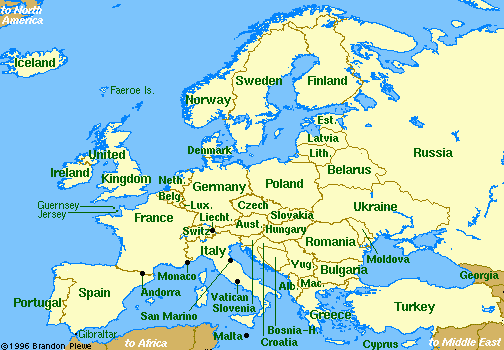

Indigenous signs for countries in Western Europe


 David Bar-Tzur
David Bar-Tzur


- Western Europe
- DH [B], PO > NDS, FO up, sweeps > left twice + [E], PO away, FO up, is held in place momentarily then [5], PO away, FO away, moves in a circle.

Flags: World flag database.
Map: Virtual Tourist.
For a quick, interesting resource for facts about this and other countries,
try Mystic Planet - The New Age directory of Planet Earth.
Explanation of glossing system used
(to understand how I describe the signs in this dictionary)
- Austria (Oesterreich)
- (1) (2h)[5] crossed at wrists, touch thumbs, and flutter fingers like a butterfly.1 (< eagle on old flag.) (2) (2h)[1] crossed at wrists, POs > signer, FOs up, wiggle fingers twice.1 For a QuickTime movie of this sign, see ASL browser - Austria. (< eagle on old flag.) (3) (2h)[V], POs > opposite side, FOs up, crossed at wrists, wiggle fingers twice. For a QuickTime movie of this sign, see Woordenboek Nederlands - Vlaamse Gebarentaal: Oostenrijk.
- Belgium (Belgique - België)
- (1) [B], PO > NDS, touches side of mouth and moves away from signer. For a QuickTime movie of this sign, see NEEDS Outreach: Belgium. (2) [5:] touches fingertips to top of head.1 (< royal crown.)
- France (France)
- (1) [F with index and thumb crossed], PO away from signer, FO up, moves > DS.1 (Edward Ingham reports: "some French Deaf friends told me that the reason why some French Deaf wiggle their hand while signing FRANCE or FRENCH with the F-handshape is because the lower three fingers represent the French tricolor [3-colors of the French flag].) For a QuickTime movie of this sign, see Woordenboek Nederlands - Vlaamse Gebarentaal: Frankrijk.
- Germany (Deutschland)
- [1], PO away from signer, FO up, taps wrist on top of head. For a QuickTime movie of this sign, see NEEDS Outreach: Germany. (< spike on top of soldier's hat during the nineteenth century.)
- Greece (Ελλάς)
- (2h)[1], NDPO > DS, FO away, DH PO > signer, FO > NDS, DH taps NDH in midjoint from above.1 For a QuickTime movie of this sign, see NEEDS Outreach: Greece.
- Greenland (Grønland/Kalaallit Nunaat)
- (2h)[bX], POs ><, FOs up, hands are held at sides of head and nod forward twice as if puting up a hood. For a movie that shows this sign, see Greenland Videos | DeafNation at 0:34.
- Ireland (Eire)
- (1) (2h)[open 8], NDH held high over shoulder and DH held at stomach, strum air with middle fingers.1 (< playing an ancient Irish harp.) For a QuickTime movie of this sign, see Woordenboek Nederlands - Vlaamse Gebarentaal: Ierland (first image). (2) [Bb], is held at temple and pivots up and down. For a QuickTime movie of this sign, see Woordenboek Nederlands - Vlaamse Gebarentaal: Ierland (second image).
- Italy (Italia)
- (1) [G], PO away from signer, FO > DS, descends while weaving from side to side.1 (2) [G], PO away, FO > DS, descends straight down.1 (< shape of country or chain of a St. Christopher's medal caught on a hairy chest, hence the weaving motion). For a QuickTime movie of this sign, see Woordenboek Nederlands - Vlaamse Gebarentaal: Italië (top image).
- Luxembourg (Luxembourg)
- (2h)[1], DH PO away from signer, FO up is held behind NDH PO down, FO > DS. DH rotates so that PO moves > NDS and changes to [X] while touching NDH.1
- Monte Carlo
- [S], PO up, FO away from signer, shakes dice in air, then throws them > NDS. For a QuickTime movie of this sign, see NEEDS Outreach: Monte Carlo. (< gambling casino.)
- Netherlands (Nederlands)
- (1) [N], FO away, flaps at wrist. For a QuickTime movie of this sign, see Woordenboek Nederlands - Vlaamse Gebarentaal: Nederlands (first image). (2) (2h)[B], touch FTs to temple and thumbs to base of head and separate while closing to [O^] and arcing up slightly.1 (< big Dutch hats.) For a QuickTime movie of this sign, see Woordenboek Nederlands - Vlaamse Gebarentaal: Nederlands (second image). Or for a static gif of this sign, see Surdimobil - Dictionnaire des signes. Click on "H", then "Hollande". It will look like nothing has happened, but scroll down to see the illustration.
- Portugal (Portugal)
- (1) (2h)[P], touch middle fingers to shoulder blades, then touch each other.1 (< matador's cape.) (2) [P] touches middle finger to forehead, then nose, then chin.1 (< shape of country resembling a person's profile.) (3) The index finger traces a line down the face from the forehead to the chin. For a QuickTime movie of this sign, see ASL browser - Portugal. (4) [3], PO down, FO > NDS, touches thumb to DS of chest and moves forward in an upward arc.
- Spain (España)
- (1) [X] touches shoulder blade, moves so that FO is away from signer, closes to [T], and touches shoulder blade again.1 (< matador's cape.) For a QuickTime movie of this sign, see ASL browser - Spain. (2) [N] touches shoulder blade with palm side, then twists and touches shoulder blade again with thumb side.1 (< matador's cape.)
- Switzerland (die Schweiz, Suisse)
- (1) [A dot] runs FT down chest, then across chest > DS with a flourish upwards.1 (< cross on flag.) (2) [G] runs FT down heart, then across heart > DS. For a QuickTime movie of this sign, see NEEDS Outreach: Switzerland. (< cross on flag.)
- The United Kingdom (The United Kingdom of Great Britain and Northern Ireland)
- U-K in British fingerspelling2&3, that is, [1] touches pinky of [5], PO > DS, FO up, then knuckle of [X], PO > signer, touches index finger of [1], PO > DS, FO up. To see a discussion of the differences between "Britain", "England", and "the United Kingdom", go to Indigenous signs: United Kingdom and see "Webmaster's note."
- Britain (Great Britain)
- (1) (2h)[5], POs down, FOs away,
are held at waist level and move up and down. For an animated gif of
this sign, see
BristishSignLanguage.com - Britain. (2) G-B in British
fingerspelling2, that is, (2h)[S], DH strikes
NDH on thumb side from above with little finger side.
- England (England)
- (2h)[1], POs > signer, but
forming right angles so that FTs can point outward diagonally. DH
slides its index finger along NDH's index several times.4 (< the index finger is an "E" in
British fingerspelling.) For an animated gif of this sign, see
BritishSignLanguage.com - England. Please note: The sign [bC] or
[bC dot], PO towards, FO > NDS, strikes chin is not used in BSL. This
is sometimes shown as such, but in error.2
- Scotland (Alba)
- [S] arm is held with elbow at side with
fist close to chest and arm squeezes against chest 2x as if playing
bagpipes.4 (< bagpipes.) For an animated gif of
this sign, see
BritishSignLanguage.com - Scotland.
- Wales (Cymru)
- (1) [W:],
PO > NDS, FO up, is held on DS and descends slightly. For an animated
gif of this sign, see
BritishSignLanguage.com - Wales. (2) [W], PO away, FO up, is
held on NDS and descends slightly while bending FT.4 (3) [W], PO > signer, touches
chin at FTs and moves away from signer.1
- Northern Ireland (Ulster)
- (1) [Bb], PO > NDS, FO up, moves
upwards + [V:], PO down, FO away, taps on [S], PO down, FO away.4 (< BSL modulated sign for NORTH and
POTATO.) (2) [Bb], PO > NDS, FO up, moves upwards + [3:], PO down, FO
away, circles above [S], PO down, FO > DS, and lands.5 (< BSL modulated sign for NORTH and
POTATO.) (3) N-I in British fingerspelling, that is, [H] slaps underside
of FT against upturned palm + index finger touches middle finger of [open
8]. (4) [Bb], PO > NDS, FO up, moves upwards + [8] held at shoulder
blade moves away slightly and flicks up to [open 8] several times.5 (< BSL modulated sign for NORTH and
SHAMROCK. The older version of this signs had the handshape change from
[O] to [W], which makes more sense in terms of the shape of a shamrock.
Some Northern Irish don't like the sign because they say it looks like
you're "flicking away fleas", but it has not been generally rejected.)
List of sources cited
 1. Signs around the world: Countries [Videotape]. Burtonsville, MD: Sign Media.
1. Signs around the world: Countries [Videotape]. Burtonsville, MD: Sign Media.
2. Roger Beeson, native BSL user.
3. To see animated images of British fingerspelling, go to BSL alphabet.
4. Brian, D. (Ed.). Dictionary of British Sign Language / English. London: Faber and Faber.
5. Ann McAllister, native BSL user.